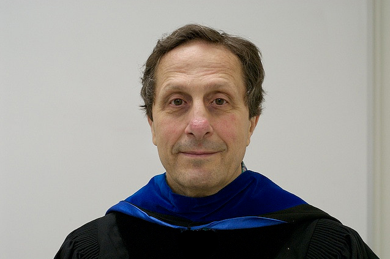

Charge transport in conducting polymers
Mechanistic studies of PEDOT and related conjugated systems, including polarons, electronic coupling, benzenoid–quinoid structure, and charge migration within and between oligomer chains.
Department of Chemistry · University of Connecticut
Research Professor · Computational and Physical Chemistry
Advancing molecular understanding through quantum chemistry, molecular dynamics, and high-performance computing.
My work connects fundamental chemical theory with computation to investigate charge transport, molecular reactivity, and complex chemical dynamics. Across research, teaching, and scientific leadership, I have focused on making powerful computational methods useful for consequential problems in chemistry and biochemistry.

Current directions
Current work centers on the electronic structure and dynamics that govern charge migration and molecular transformation.
Mechanistic studies of PEDOT and related conjugated systems, including polarons, electronic coupling, benzenoid–quinoid structure, and charge migration within and between oligomer chains.
Connecting real-time TDDFT, nonadiabatic molecular dynamics, diabatic states, and tight-binding models to reveal how electronic coupling, nuclear motion, and decoherence control transfer.
Computational investigation of competing fragmentation pathways, roaming dynamics, excited states, and experiment–theory discrepancies in highly energized molecular ions.
Career
My career has joined research, education, and scientific computing across universities, industry, and national scientific programs.
Ph.D. in Physical Chemistry; later a tenured full professor; currently Research Professor in the Department of Chemistry.
Postdoctoral research with Nobel Laureate Roald Hoffmann.
Professor during a sabbatical year in France.
Research Staff Member working at the intersection of computational chemistry and high-performance computing.
Adjunct teaching in Chemistry and Chemical Engineering at Columbia; Professor of Chemistry at York College and Director of the CUNY–FDA collaboration.
Leadership and education
I have served as Chair of the American Chemical Society Division of Computers in Chemistry, Chair of a Department of Energy peer-review panel for large-scale computational science, and a member of the National Science Foundation PetaApps Review Panel.
My courses and workshops help students and experimental scientists move beyond attractive molecular pictures to understand the theory, approximations, numerical results, and scientific judgment behind modern computation.
Contact
Department of Chemistry · University of Connecticut